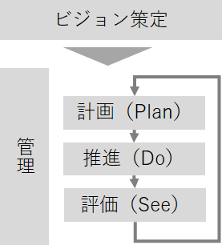

当社は中堅中小企業様のDX（デジタル・トランスフォーメーション）の検討・推進に貢献いたします。
このような企業様におすすめです
当てはまる状況があれば、ASCのDXコンサルティングがお役に立てます。
DX推進でよくある課題
DXへの取り組みが必要と認識されていても、以下のような状況で足踏みしているケースが多くあります。
- DX以外の業務も抱えており、DXに取り組む時間が確保できない
- IT知識を持った人財がいないため、社内議論が活性化しない
- DXの企画・推進をしたいが、どのように進めるのか分からない
- 特定IT分野に強い人財はいるが、広い視野・幅広い知識でDXに取り組むのが難しい
- レガシーシステムが複雑化・ブラックボックス化しており、何から手を付ければよいか判断できない
ASCのDXコンサルティングサービスをご活用いただくことで、こういった状況の解消が可能です。
ASCが選ばれる3つの理由（要約）
▼ 詳しい選ばれる理由はページ下部でご紹介しています
DX とは
DX（デジタル・トランスフォーメーション） は、2004年にスウェーデンのエリック・ストルターマン氏（ウメオ大学教授）によって提唱された概念であり、「進化し続けるテクノロジーが人々の生活を豊かにしていく」というものです。
日本においては、2018年9月に経済産業省（以下、経産省）から「DXレポート」という報告書が発表されました。副題は「ITシステム『2025年の崖』の克服とDXの本格的な展開」とあります。
「DXレポート」によると、『2025年の崖』とは、既存システムの分断や複雑化・ブラックボックス化により、DX（デジタル・トランスフォーメーション）が実現できず、2025年以降に最大12兆円／年（現在の約３倍）の経済損失が生じる可能性と説明されています。
東京都の予算規模が約15兆円ですから、その経済損失の影響は、極めて大きいといえます。
DX に取り組まないと何が起こるのか？
弊社の主なクライアント層である中堅中小企業において、DX に取り組まないと何が起こるのでしょうか？
企業ごとにタイミングは異なるものの、DXに取り組まずに『2025年の崖』を迎えてしまうと以下のようなことに直面するリスクがあります。
＜中堅中小企業における『2025年の崖』を迎えた際のイメージ＞
- ビジネス、業務におけるIT・システムの重要度が高まる一方にも関わらず、IT・システムを担当する部門および担当者がおらず、IT・システムの活用が進まない。結果として、大企業や同規模の競合企業に大きな差を付けられる。
- ようやくデータ分析・活用の重要さに気がついたものの、データは蓄積されていない、データ分析ができる人材がいない状況で、競合に大きな差を付けられる。
- 情報漏えいやシステムトラブルなどへの対策を放置してきた結果、事故の発生を機に取引先からの信用を失う。
DXコンサルティングでできること
DX への取り組みが必要だと認識されていても、時間・人材・知識が不足していてなかなか前に進めないというお話を耳にします。
弊社のDXコンサルティングサービスをご活用いただくことで、こういった状況の解消が可能です。
- DXの現状診断と優先課題の特定
- ビジョン策定（Will Beモデル®）と中長期ロードマップの作成
- DX推進のプロジェクトマネジメント支援
- システム・ツール選定の支援（中立立場）
- 社内体制・人材育成の提言
実際にご支援いたします際には、お客様のご希望や要件を伺い、最適な方法・手順をご提案いたします。
「何から始めればいいかわからない」「社内リソースが不足している」
そんなお悩みも、初回相談でお気軽にお聞かせください。
TEL: 03-3513-7830（平日9:00〜18:00）
ASCが選ばれる理由
弊社は、DX の企画・推進に必要な知識と経験を備えており、コストパフォーマンスが優れているという特長があります。
DX の企画・推進においては、以下の知識や経験、素養が求められます。
- 経営戦略を理解できるだけの業界、業務知識
- 情報技術全般にわたる専門知識とシステムの導入や開発、運用などの経験
- 特定の製品やサービスに縛られない中立性
弊社は、独立系のITシステムコンサルティング会社です。
製造業、販売業、情報通信業、サービス業、学校、病院など、様々な業界でのご支援を経験してまいりました。数多くのお客様へのご支援を通じて、幅広い業界経験を培ってまいりました。
また弊社では、IT分野を専門としたコンサルティングサービスを提供しております。情報システムのライフサイクルに沿って様々なサービスをご提供しており、ITに関する広い知識と経験を有しております。
そして弊社は、特定の会社との利害関係（資本関係等）はございません。特定の製品やサービスに限定せず、第三者的な立場から、業界動向や製品、サービスを調査し評価できます。コンサルティング会社本来の、公正中立な立場で、お客様をご支援いたします。
これらが、弊社がお客様に選んでいただける理由です。
費用・期間の目安
案件の規模・対象範囲によって異なりますが、以下を目安としております。
- 期間：2〜6ヶ月程度で施策をまとめることが多いです（実行支援を伴う場合は長期になることがあります）
- 費用：事業規模や対象範囲にもよりますが、1ヶ月あたり数十万円〜200万円以内でのご支援が多いです
大手コンサルティングファームと比較して、1/2〜1/3程度の費用でご支援できるケースも多くあります。
- 「まずは課題整理だけでも相談できますか？」→ 初回ヒアリングは無料で承っております。
- 「予算が限られているが対応可能？」→ 支援範囲を調整してスモールスタートも可能です。
- 「途中で範囲が拡大した場合は？」→ 都度合意の上で進めますので安心してご相談ください。
DXコンサルティングの進め方（例）
DXコンサルティングは、各社の状況・体制等により、進め方が大きく異なります。
一例として、以下のような進め方がございます。

ビジョン策定
経営者が社員に対して「DXに取り組むように」と号令をかけるだけでは、DX は成功しません。企業のビジョン・目標があり、それに向かってDXに取り組む必要があります。
貴社のビジョン・目標に何をおくのか？DX を推進することで実現可能なビジョン・目標は何なのか？
そして、貴社がありたい姿・目指したい姿（Will Be モデル）についても、貴社と一丸となって定義していきます。
管理
DX を推進していくなかで、人・物・カネ・情報の管理が重要です。
DX の取り組みにおいては、
計画（Plan） → 推進（Do） → 評価（See）
を短い期間で繰り返します。また、同時並行でいくつもの施策を推進します。
高度なプロジェクトマネジメントが必要になることが多いといえます。
弊社は貴社のプロジェクトチームの一員として、プロジェクトマネジメントの支援をいたします。
計画（Plan）
貴社ビジネス担当者の方々と共に、企画・計画をおこないます。
ここでは、ビジョン策定フェーズで策定した貴社がありたい姿・目指したい姿（Will Be モデル）を具体化し、その実現計画を策定していきます。
推進（Do）
策定した計画に基づき、ありたい姿（Will Be モデル）を実現していきます。
評価（See）
計画に基づいてありたい姿（Will Be モデル）が実現した後は、その評価をおこないます。
現状の評価をしっかりとすることで、次の計画（Plan）・推進（Do）に活かします。
上記の作業手順は、標準的なひとつの例です。実際にご支援いたします際には、お客様のご希望や要件を伺い、お客様にとって最適な方法、手順をご提案いたします。
Will Beモデル®は、青山システムコンサルティング株式会社の登録商標です。(商標登録 第6272163号 )